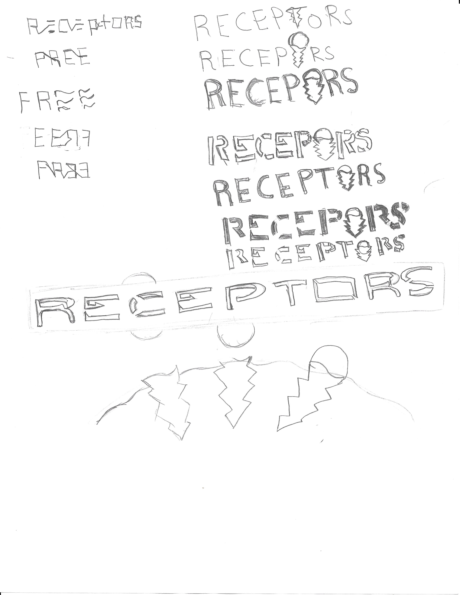
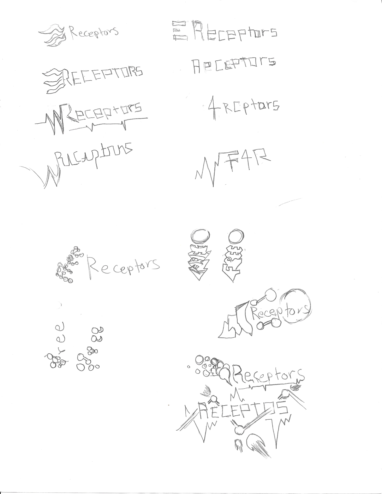
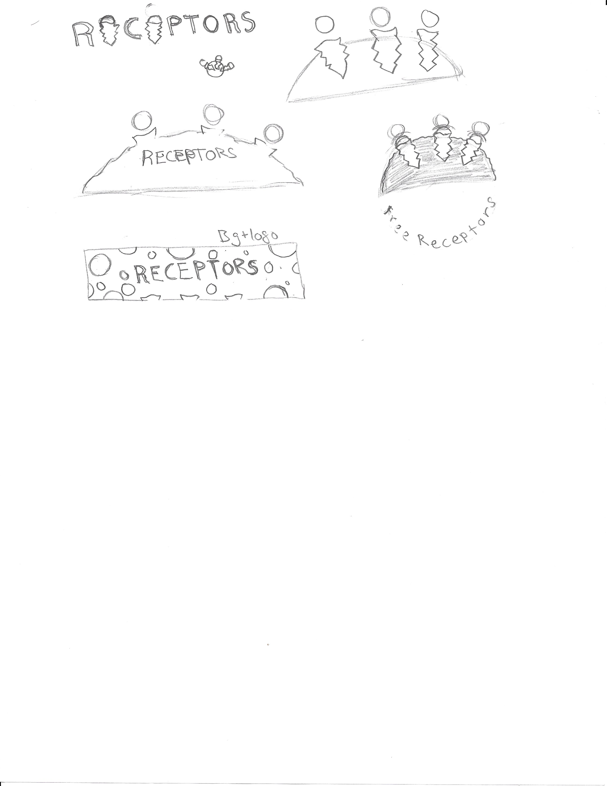

About
Free Receptors is a non-profit website project by Mark O. Gutiérrez. This website is meant to raise awareness on opioid abuse by helping people understand how opiods work. We want to start by explaining people the topic of opioid and clearing misunderstandings.
Why Us?
We provide the lastest information in a comprehensive way. We will guide you from what are opioids, to opioid addiction, to ways of helping others.
Our website is up to date with any device and you can access it at your comfort. We adapt to your preferred device, whether it is a mobile, desktops, or tablets.
Joining Us
We are looking for people who share the same cause as us. Whether you are a designer, web developer, artist, or writer if you think you can contribute please contact us.
Our concept
Below you can find some of our ideas, designs and how we improved since then.
LOGOS
  